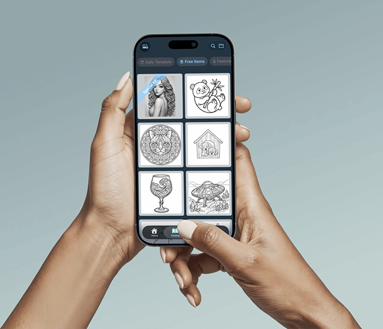
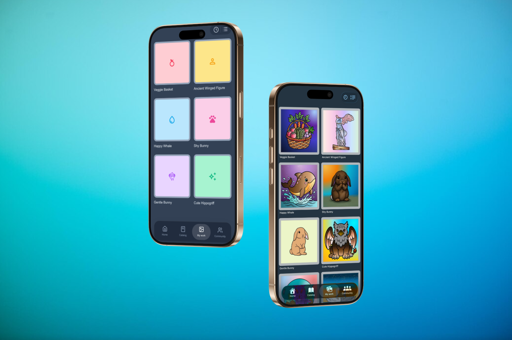
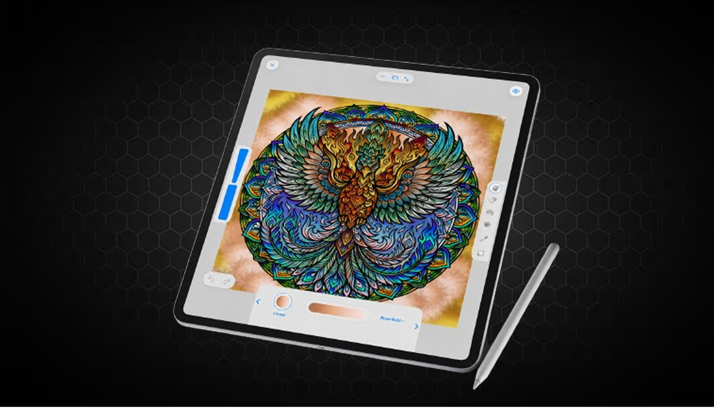
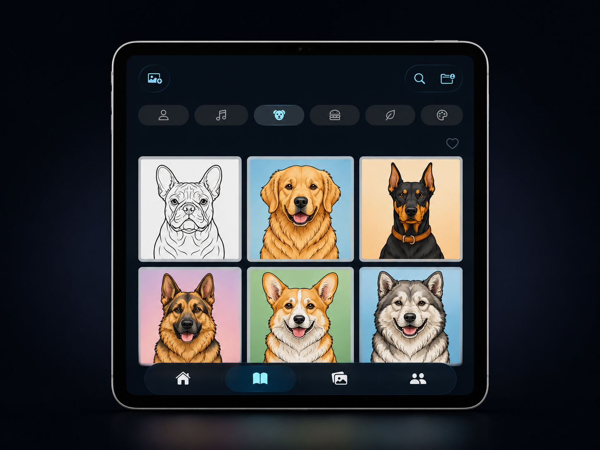
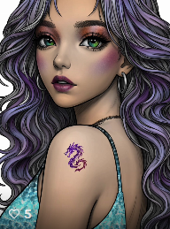

A creative app for drawing, coloring, and visual relaxation. Built as an experimental product exploring simple, calming digital interactions.
Pinta is a creative app for iPhone and iPad built around a simple idea: drawing and coloring should feel easy, calming, and enjoyable, without overwhelming users with complex tools or feature-heavy interfaces.
The app is currently published and in active development, with ongoing improvements and new ideas being explored over time. The goal has been to create a lightweight creative space focused on accessibility, visual simplicity, and relaxed interaction.
This project is in develop collaboratively. My contribution focus on interface exploration, visual direction, early testing, and content creation, working alongside a partner leading the broader product vision.
My contribution focused on shaping and testing ideas visually, helping turn early concepts into interfaces, assets, and experiences that could be explored and refined collaboratively.
A look at how the work developed — early wireframes, visual explorations, and iterations as the interface took shape. From rough concepts to refined screens. The process moved through experimentation, discarded ideas, and several iterations before reaching the final experience.





Working on an early-stage product is very different from working on a defined brief. There is no clear success criteria handed to you, so part of the work is defining what “good” actually means.
Pinta forced me to make design decisions without a fixed spec. That ambiguity was uncomfortable at first, but it became one of the most useful parts of the process.